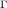
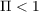
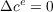
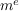

30Note that if the GIC fails so that , the slope of the  locus is shallower than the slope of the perfect foresight consumption function. The fact that these two loci never intersect reflects the fact that the consumer will behave in such a way as to accumulate  forever.